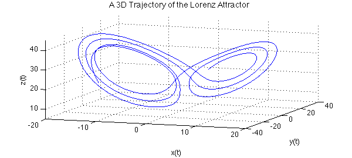
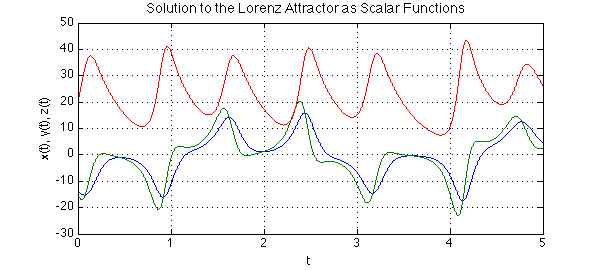
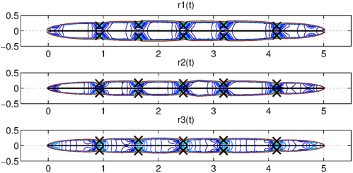

In this example we discuss numerical analytic continuation into the complex plane using the ratinterp command in order to approximate singularities of solutions to the Lorenz equations.
The Lorenz system in real time
The Lorenz system is a system of ODEs first studied by Edward Lorenz in the 1960s as a simplified model of convection rolls in the upper atmosphere [2]. The system is as follows:
$$\frac{dx}{dt} = 10(y-x) $$
$$\frac{dy}{dt} = 28 x - y - xz, $$
$$\frac{dz}{dt} = -{8\over 3}z + xy. $$
We can compute a numerical solution on the interval $[0,5]$ using Chebfun's overload of the MATLAB ODE solver, ode113:
opts = odeset('abstol',1e-13,'reltol',1e-13);
fun = @(t,u) [10*(u(2)-u(1)); 28*u(1)-u(2)-u(1)*u(3); u(1)*u(2)-(8/3)*u(3)];
u = chebfun.ode113(fun,[0,5],[-14 -15 20], opts);
The solution can be viewed as an autonomous dynamical system in three dimensions, so we plot the trajectory:
LW = 'linewidth'; FS = 'fontsize';
plot3(u(:,1),u(:,2),u(:,3), LW, 1.6), view(20,20)
axis([-20 20 -40 40 5 45]), grid on
xlabel 'x(t)', ylabel 'y(t)', zlabel 'z(t)'
title('A 3D Trajectory of the Lorenz Attractor', FS, 14)

We can also view solutions as three interrelated scalar-valued functions of time:
plot(u, LW, 1.6)
grid on, xlabel 't', ylabel 'x(t), y(t), z(t)'
title('Solution to the Lorenz Attractor as Scalar Functions', FS, 14)

Here as usual in MATLAB, $x$, $y$ and $z$ are coloured blue, green and red respectively.
The Lorenz system in complex time
In "Complex singularities and the Lorenz attractor" [3], Viswanath and Sahutoglu make the point that although the Lorenz attractor is a well known example in applied mathematics, relatively little is known about its mathematical analysis. It is suggested that a natural way to view the analysis is as a problem in analytic function theory, considering time as a complex variable.
Solutions to the Lorenz system can be written locally in the form of a Psi-series. A Psi-series centred at $t_0$ in the complex plane is a series of the form:
$$ \sum_{j = -J}^\infty P_j(\eta)(t-t_0)^j, \quad \eta = \log(b(t-t_0)), $$
where $J$ is an integer, $P_j$ is a polynomial and $b$ is a complex number with $|b| = 1$.
It is shown that the Lorenz system admits Psi-series solutions of the form:
$$ x(t) = \qquad \qquad \quad \frac{P_{-1}(\eta)}{t-t_0} + P_0(\eta) + P_1(\eta)(t-t_0) + P_2(t-t_0)^2 + \ldots, $$
$$ y(t) = \frac{Q_{-2}(\eta)}{(t-t_0)^2} + \frac{Q_{-1}(\eta)}{t-t_0} + Q_0(\eta) + Q_1(\eta)(t-t_0) + Q_2(t-t_0)^2 + \ldots, $$
$$ z(t) = \frac{R_{-2}(\eta)}{(t-t_0)^2} + \frac{R_{-1}(\eta)}{t-t_0} + R_0(\eta) + R_1(\eta)(t-t_0) + R_2(t-t_0)^2 + \ldots, $$
valid in some disc centred at $t_0$ with a branch cut removed.
Asymptotically, the singularities behave like poles of orders 1, 2 and 2 for $x$, $y$ and $z$ respectively, because the logarithmic terms are "overpowered" in the limit as $t \rightarrow t_0$. A rational approximation is therefore appropriate for computing the locations of the singularities.
Analytic continuation via rational interpolation
We can compute a rational interpolant of the solution using ratinterp, which actually computes a least squares approximation to the interpolation problem, removing poles that are likely to be spurious [1, Sec. 2]. The following command computes rational fits of types $(m, n) = (226,40)$, $(248,40)$ and $(242,40)$, where $m$ is the degree of the numerator and $n$ is the degree of the denominator:
[p1,q1,r1,mu1,nu1,poles1] = ratinterp(u(:,1),221,40, 444, [], 1e-12); [p2,q2,r2,mu2,nu2,poles2] = ratinterp(u(:,2),241,40, 484, [], 1e-12); [p3,q3,r3,mu3,nu3,poles3] = ratinterp(u(:,3),236,40, 473, [], 1e-12);
Here we have taken $m$ to be half the degree of the chebfun $u$ and $n$ to be a number greater than the number of singularities we expect to find. We don't actually expect to find 40 singularities, because ratinterp will reduce the degree of the numerator automatically to avoid extra unwanted poles.
Here we have a contour plot of the rational approximants $r_1$, $r_2$, $r_3$, computed by ratinterp with the computed locations of singularities plotted as black crosses:
xx = linspace(-0.5,5.5,200);
yy = linspace(-0.5,0.5,200);
[XX,YY] = meshgrid(xx,yy);
z = XX+1i*YY;
subplot(3,1,1)
contour(xx,yy,abs(r1(z)), 0:5:150);
grid on, hold on
title('r1(t)')
MS = 'markersize';
plot(poles1, 'xk', MS, 16, LW, 1.6)
plot([0,5],[0,0],'k',LW,1.6)
subplot(3,1,2)
contour(xx,yy,abs(r2(z)), 0:5:150);
grid on, hold on
title('r2(t)')
plot(poles2, 'xk', MS, 16, LW, 1.6)
plot([0,5],[0,0],'k',LW,1.6)
subplot(3,1,3)
contour(xx,yy,abs(r3(z)), 0:5:150);
grid on, hold on
title('r3(t)')
plot(poles3, 'xk', MS, 16, LW, 1.6)
plot([0,5],[0,0],'k',LW,1.6)

The singularities are very close to the real line, demonstrating that the behaviour of the solution on the real line is intimately related to its complex singularities. On the other hand, it has been proven that the imaginary parts of any singularity of the Lorenz attractor must have absolute value greater than $0.037$ [3].
Note that by the Psi-series formula, each of $x$, $y$ and $z$ should have the same singularities. Let's compare our computed values to obtain a lower bound on the error. The first column in the following contains the computed locations of the singularities of $x$, the second those of $y$ and the third those of $z$; the final column is the maximum separation in absolute value of these computed locations:
format short
diff = sort([abs(poles1-poles2),abs(poles1-poles3),abs(poles2-poles3)]);
disp(' poles in x poles in y poles in z max. difference')
disp([poles1, poles2, poles3, diff(:,1)])
poles in x poles in y poles in z max. difference 0.9301 - 0.1642i 0.9294 - 0.1557i 0.9293 - 0.1557i 0.0078 + 0.0000i 0.9301 + 0.1642i 0.9294 + 0.1557i 0.9293 + 0.1557i 0.0078 + 0.0000i 1.6395 - 0.1874i 1.6363 - 0.1756i 1.6373 - 0.1796i 0.0085 + 0.0000i 1.6395 + 0.1874i 1.6363 + 0.1756i 1.6373 + 0.1796i 0.0085 + 0.0000i 2.4530 - 0.1669i 2.4520 - 0.1563i 2.4520 - 0.1562i 0.0106 + 0.0000i 2.4530 + 0.1669i 2.4520 + 0.1563i 2.4520 + 0.1562i 0.0106 + 0.0000i 3.1835 - 0.1816i 3.1831 - 0.1710i 3.1816 - 0.1711i 0.0106 + 0.0000i 3.1835 + 0.1816i 3.1831 + 0.1710i 3.1816 + 0.1711i 0.0106 + 0.0000i 4.1492 - 0.1520i 4.1484 - 0.1442i 4.1484 - 0.1440i 0.0122 + 0.0000i 4.1492 + 0.1520i 4.1484 + 0.1442i 4.1484 + 0.1440i 0.0122 + 0.0000i
Let $t_0$ denote the location of a singularity and $t_w$ the worst of our three approximations of it, $t_1$, $t_2$, $t_3$. Then we have for $i,j = 1,2,3$:
$$ |t_i - t_j| \leq |t_0 - t_i| + |t_0- t_j| \leq 2|t_0-t_w|. $$
Hence our worst case error for each pole is at least the following:
0.5*diff(:,1)'
ans =
Columns 1 through 7
0.0039 0.0039 0.0043 0.0043 0.0053 0.0053 0.0053
Columns 8 through 10
0.0053 0.0061 0.0061
It is remarkable that with just 6 lines of Chebfun we have been able to solve the Lorenz system, find rational approximations, then compute the location of their poles by finding the roots of the denominator. Considering this, the agreement we see here is not bad, although it would be desirable to have better.
ratinterp tolerance parameter
The final argument in ratinterp is a tolerance parameter, which we set to $10^{-12}$ above. This affects which poles are removed from the approximant [Sec. 2, 1]. The higher the tolerance, the more poles are removed by ratinterp. Here is what happens when this robustness is not used at all (tolerance = 0):
[p,q,r,mu,nu,poles] = ratinterp(u(:,1),221,40, 444, [], 0); poles
poles = 0.0139 + 0.0000i 0.0498 + 0.0000i 0.1008 + 0.0000i 0.1535 + 0.0000i 0.1825 + 0.0000i 0.3500 + 0.0000i 0.4966 + 0.0000i 0.8826 + 0.0000i 0.9300 - 0.1641i 0.9300 + 0.1641i 0.9351 - 0.2005i 0.9351 + 0.2005i 1.6394 - 0.1873i 1.6394 + 0.1873i 1.6469 - 0.2270i 1.6469 + 0.2270i 2.3090 + 0.0000i 2.4530 - 0.1668i 2.4530 + 0.1668i 2.4620 - 0.2087i 2.4620 + 0.2087i 3.1834 - 0.1815i 3.1834 + 0.1815i 3.1919 - 0.2280i 3.1919 + 0.2280i 3.2940 - 0.5338i 3.2940 + 0.5338i 3.8249 - 0.4067i 3.8249 + 0.4067i 4.1492 - 0.1519i 4.1492 + 0.1519i 4.1551 - 0.1849i 4.1551 + 0.1849i 4.6975 + 0.0000i 4.8216 + 0.0000i 4.8691 + 0.0000i 4.9273 + 0.0000i 4.9826 + 0.0000i 4.9998 + 0.0000i 5.6151 + 0.0000i
There are many unwanted, spurious poles. They are paired with roots of the numerator, but only up to machine precision, so they don't actually cancel each other out. These are sometimes called Froissart doublets, for the astrophysicist Marcel Froissart.
subplot(1,1,1)
plot(poles, 'or', MS, 8,'markerfacecolor','r')
hold on, grid on, xlabel 'Re(t)', ylabel 'Im(t)'
plot(roots(p, 'complex'), 0, 'ok', MS, 12)
title('Poles and Zeros of the Rational Interpolant', FS, 14)

The issues related to the robust form of rational interpolation and least squares approximation used by ratinterp are discussed in [1] and Chapter 26 of [4].
References
-
M. Webb, Computing complex singularities of differential equations with Chebfun, SIAM Undergraduate Research Online, 2013, http://dx.doi.org/10.1137/12S011520.
-
E. Lorenz, Deterministic nonperiodic flow, Journal of the Atmospheric Sciences, 20 (1963), 130-141.
-
D. Viswanath and S. Sahutoglu, Complex singularities and the Lorenz attractor, SIAM Review, 52 (2010), 294-314.
-
L. N. Trefethen, Approximation Theory and Approximation Practice, SIAM, 2013.
-
L.N. Trefethen, Analytic continuation via rational approximation, Chebfun example, 6th March 2013